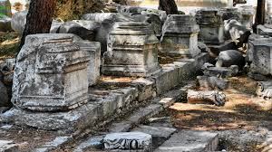
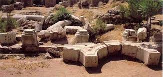

Akhisar ilçesinin üzerinde bulunduğu Antik Thyateira Kenti, geçmişi erken bronz çağ dönemine kadar inen bir kenttir. Antik çağda önemli dokumacılık merkezlerinden biri olan Thyateira, bölgedeki başlıca merkezlere ulaşımı sağlayan yolların kesiştiği bir noktada bulunması nedeniyle, askeri ve ticari açıdan da önemli bir kavşak oluşturmaktaydı.


 "Manisa"ya dönmek için basın
"Manisa"ya dönmek için basın